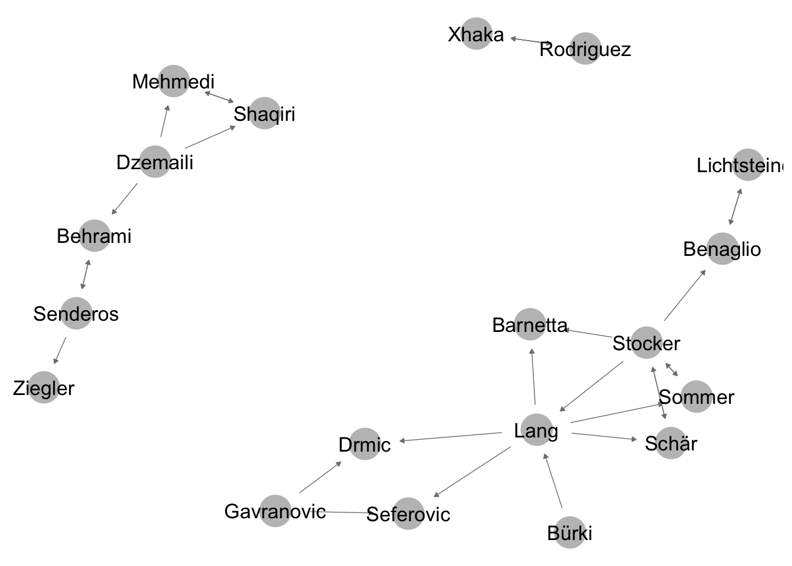
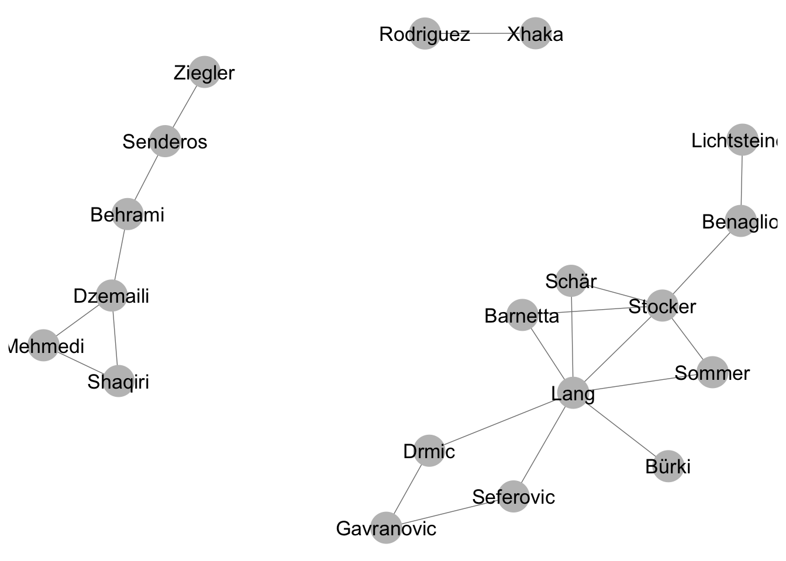
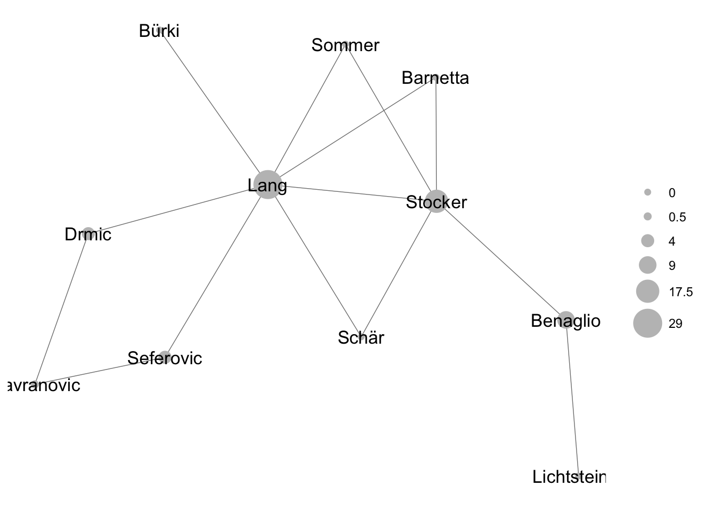

4 A step by step guide to computing centrality measures in statnet
4.1 Preparation
What is statnet? It’s a compendium of R tools which greatly facilitate network analysis. That is why we load it first:
library(statnet)We also need the package GGally. GGally contains ggnet2, which allows us to create pretty network visualizations.
library(GGally)4.2 Objekte vom Typ network
In the following, we will utilize the friendship network of the Swiss national soccer team. Let’s quickly recall the adjacency matrix.
friends_adjmat[1:5,1:5]## Gavranovic Lang Bürki Schär Sommer
## Gavranovic 0 0 0 0 0
## Lang 0 0 0 1 1
## Bürki 0 1 0 0 0
## Schär 0 0 0 0 0
## Sommer 0 0 0 0 0We will create two network objects out of this matrix. Remember, objects of type network are a specific way to save networks in R. They are created using the function network().
We first create a directed network with the option directed = T, which we name net_directed.
net_directed <- network(friends_adjmat,directed = T) #make a directed network objectLet’s plot the object with ggnet.
ggnet2(net_directed, node.label = T, arrow.size = 3, arrow.gap = 0.05) #plot directed network## Loading required package: scales
Using the option directed = F, we can create an undirected network object, which we can also plot with ggnet2.
net_undirected <- network(friends_adjmat,directed = F) #make an undirected network objectggnet2(net_undirected, node.label = T) #plot undirected network
We can now do different operation on these network objects by feeding them into functions. The first operation is already depicted above. With plot() or ggnet2(), we can create network graphics. But we can go a long way beyond this and use more formalized ways of analyzing network structure.
A first operation we can do is to only use the largest connected component of the network for further calculation. This is done here to simplify interpretation. A connected component of a network is a part of the network where all nodes are connected in some way. There can be many components in a network, if the network is disconnected into different parts. The largest connected component is the connected component with the most nodes.
largest_component <- component.largest(net_undirected) # isolate the largest component
adj_mat_largest_comp <- net_undirected[largest_component, largest_component] # get the adjacency matrix of the largest component
net_undirected <- network(adj_mat_largest_comp, directed = F) # recreate our net_undirected, only including the largest component
adj_mat_largest_comp_directed <- net_directed[largest_component, largest_component]
net_directed <- network(adj_mat_largest_comp_directed, directed = T) #get the directed versionThe network now looks like this - only the largest components remains.
ggnet2(net_directed, node.label = T, arrow.size = 3, arrow.gap = 0.05) #plot directed network4.3 Density
First, let’s compute the density of the undirected network. We can do this using the function gden(). For most network metrics, it is important if the network is directed or not. We can tell the gden function about this using the parameter mode. Setting mode to “graph”, calculates density according to the formula for an undirected network.
gden(dat = net_undirected,mode = "graph") #calculate with gden function## [1] 0.2545455Setting mode to digraph, does the same for a directed network.
gden(net_directed,mode = "digraph")## [1] 0.1545455Remember, you can always look at the different parameters of R functions using ?function, eg. ?gden
4.4 Node-level centrality measures
Using the function degree(), we can now calculate the degree centrality of every mode in the network. Using the degree function on the undirected network (remember that we have to specify “graph” again for this), we receive a vector of degree centralitiy for each node.
degree(net_undirected,gmode = "graph")## [1] 2 7 1 2 2 5 2 1 2 2 2To further work with these degree values, we have to write them into an object. Thus, we write the vector we receive by running degree into an R object we call deg.
deg <- degree(net_undirected,gmode = "graph") #calculate a vector of degree values for all nodes inLet’s do the same things for closeness and betweenness.
clo <- closeness(net_undirected,gmode = "graph")
bet <- betweenness(net_undirected,gmode = "graph")What do we do with this now? For example, we can create a data frame of all nodes in the undirected network with their respective degree, closeness and betweennes values.
To do so, we combine the three vectors in a data frame.
centrality_df <- data.frame(bet, clo, deg, row.names = rownames(adj_mat_largest_comp))
round(centrality_df,digits = 2) #just a bit of rounding.## bet clo deg
## Gavranovic 0.5 0.36 2
## Lang 29.0 0.71 7
## Bürki 0.0 0.43 1
## Schär 0.0 0.50 2
## Sommer 0.0 0.50 2
## Stocker 17.5 0.62 5
## Benaglio 9.0 0.43 2
## Lichtsteiner 0.0 0.31 1
## Drmic 4.0 0.48 2
## Seferovic 4.0 0.48 2
## Barnetta 0.0 0.50 2Let’s now size the nodes in our visualization according to betweenness. Who holds the network together? It looks like it’s Fabian Schär.
ggnet2(net_undirected, node.label = T, node.size = centrality_df$bet) #plot undirected network
4.5 Global centrality measures
We can also use the network objects to compute global centralization measures. To do so wie use the function centralization(). The parameter FUN in centralization() allows to specify the centrality measure to base our centralization score on. For example, we can choose degree:
centralization(net_undirected, mode = "graph",FUN = "degree")## [1] 0.5444444But also, as before, betweenness and closeness.
centralization(net_undirected, mode = "graph",FUN = "betweenness")## [1] 0.5666667centralization(net_undirected, mode = "graph",FUN = "closeness")## [1] 0.5333233